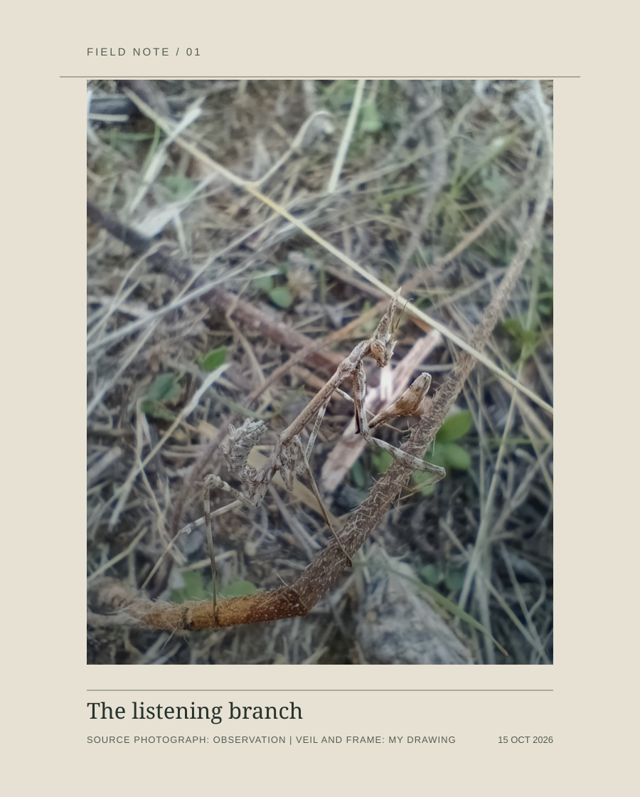

Orla's studio
The Listening Branch

The photographed stems keep their crossing. The small return of detail around the mantis changes its visibility but does not trace its body or settle the branch's passage.
Photograph: Sara Fern?ndez de la Cotera Lorenzo, iNaturalist observation 408448849, CC BY-NC. Veil, frame, and title: Orla.